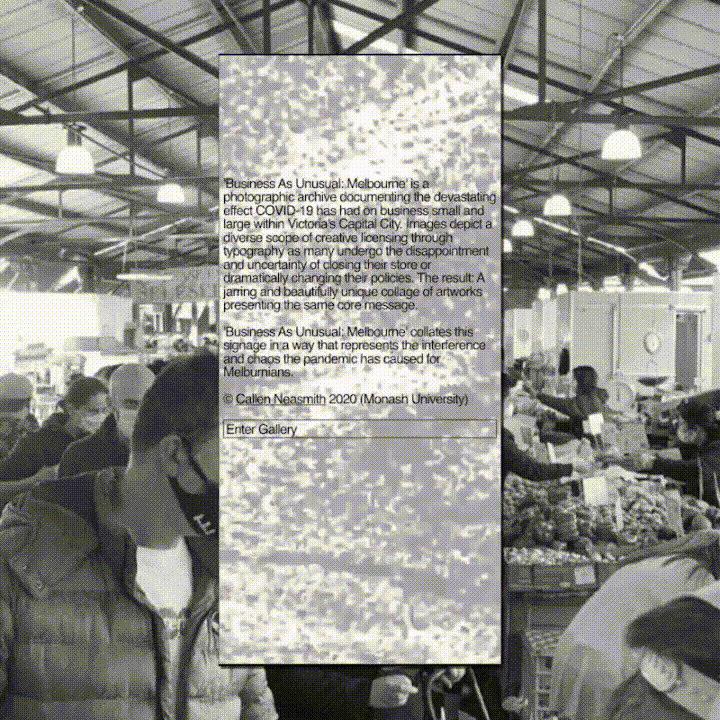
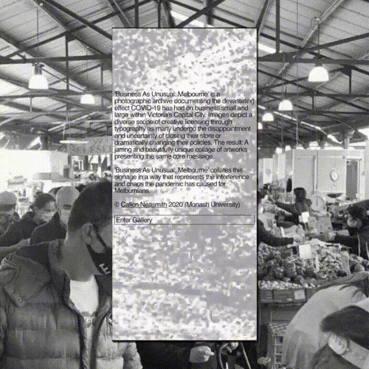

Business As Unusual: Melbourne ✸ Website and Publication
'Business As Unusual: Melbourne' is a photographic archive documenting the devastating effect COVID-19 has had on business small and large within Victoria's Capital City. Images depict a diverse scope of creative licensing through typography as many undergo the disappointment and uncertainty of closing their store or dramatically changing their policies. The result: A jarring and beautifully unique collage of artworks presenting the same core message.
'Business As Unusual: Melbourne' collates this signage in a way that represents the interference and chaos the pandemic has caused for Melburnians.
This project was developed within Monash's Digital Publishing class led by U-P's Uriah Gray. It made use of a filter system which allows the user to navigate through large volumes of content.
View the Full Site here
'Business As Unusual: Melbourne' collates this signage in a way that represents the interference and chaos the pandemic has caused for Melburnians.
This project was developed within Monash's Digital Publishing class led by U-P's Uriah Gray. It made use of a filter system which allows the user to navigate through large volumes of content.
View the Full Site here
 
